0.说明
PCB(Printed Circuit Board)，中文名称为印制电路板，又称印刷线路板，是重要的电子部件，是电子元器件的支撑体，是电子元器件电气连接的载体。由于它是采用电子印刷术制作的，故被称为“印刷”电路板。
通过绘制51系列单片机最小系统PCB图，进一步了解Altium Designer的使用方法和操作步骤。
1.准备
- 按《51最小系统原理图绘制》中的步骤，绘制好原理图。
- 查阅数据手册中关于封装的章节。如《AT89S51数据手册(DataSheet)》中，关于封装(Packaging Information)的信息。
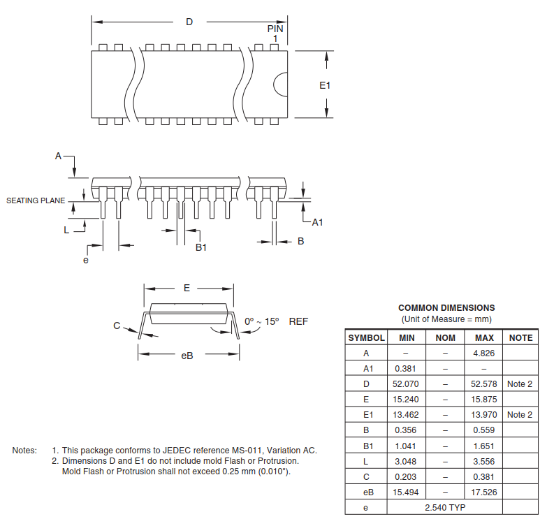
2.基本概念
- 印制电路板制造，以减去法中的腐蚀铜箔法为主。
减去法：是利用化学品或机械将空白的电路板（即铺有完整一块的金属箔的电路板）上不需要的地方除去，余下的地方便是所需要的电路。
- 元器件封装工作层面
- 信号层：用来放置元件和布线。包括：顶层Top Layer/中间层Multi-Layer/底层Bottom Layer。
- 机械层：用于放置与电路板的机械特性有关的标注尺寸信息和定位孔。包括：Mechanical 13等。
- 阻焊层：其意义是反的。不包含该层的地方将覆盖阻焊(绿油)。包括：顶层Top Solder/底层Bottom Solder。
- 锡膏防护层：用来制作印刷锡膏的钢网。包括：顶层Top Paste/底层Bottom Paste。
- 丝印层：用于绘制元件的外形轮廓、文件标号和说明文字等。包括：顶层Top Overlay/底层Bottom Overlay。
- 禁止布线层：用于绘制印制板的边框等信息。包括：Keep-Out Layer。
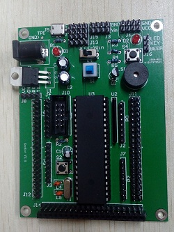
- 常见元器件封装类型
- SIP：单列直插式封装，引脚中心距为2.54mm。
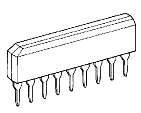
- DIP(Dual inline-pin Package)双列直插式封装，引脚中心距为2.54mm，应用广泛。
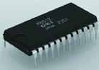
- 其他常用元器件的PCB封装。
- PCB设计中的常用尺寸单位：mil(密耳)，为英制单位，1mil=1/1000inch=0.0254mm。如管脚间距为100mil，即为2.54mm。
3.绘制PCB库
- PCB库，主要用来保存和编辑元器件PCB封装的尺寸和管脚位置。新建pcb库。File--New--Library--PCB Library。
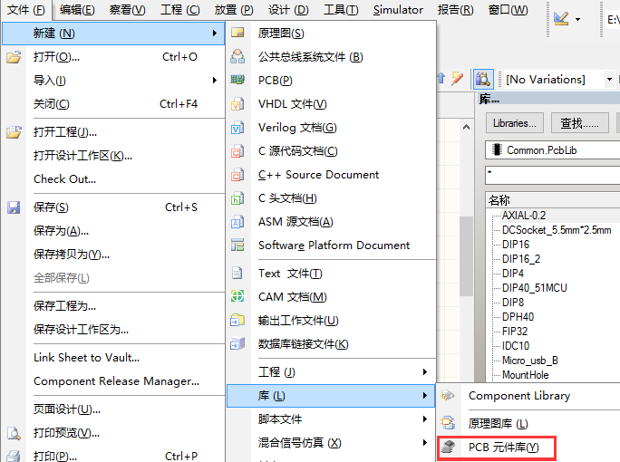
- 元器件PCB封装，可通过手动编辑生成。部分器件也可以使用向导生成。下面以51单片机的封装为例，进行示范。
- 手动编辑示范
- 放置焊盘位置，定义焊盘属性(推荐通孔直径35mil，焊盘大小为65mil)。
第1个焊盘，一般会特殊标记。如:第1个引脚，使用方形焊盘,其他引脚用圆形焊盘;也可以在丝印层使用小圆点标记第1个引脚。
- 在丝印层标记单片机的尺寸，和半圆形缺口位置。
- 在右键--工具--元件属性对话框里，修改名称为"DIP40"。
- 保存PCB库文件。
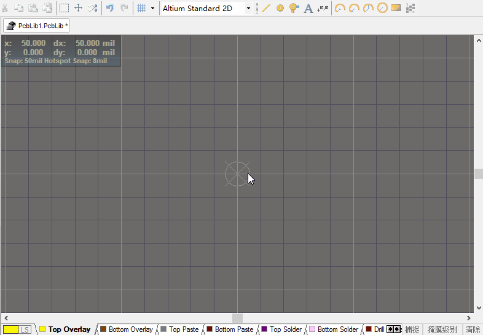
- 向导生成示范
- 使用元器件向导。Tools--Component Wizard...--Next--选择”Dual In-line Packages(DIP)”--Next--修改过孔大小为35mil--Next--Next--Next--修改焊盘数为40--Next--Next--Finish。我们一般选购的DIP40的单片机的封装，即绘制完成。
- 保存PCB库文件。
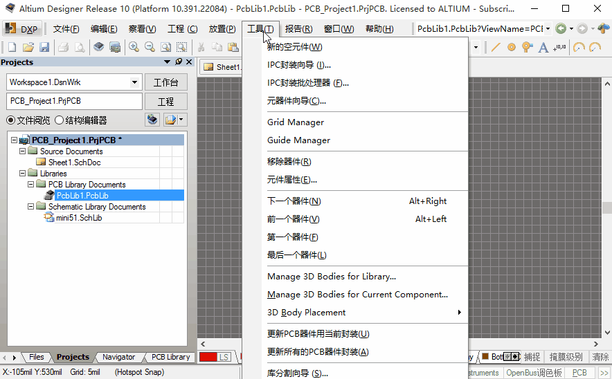
- 添加其他器件的pcb封装。
4.pcb文件设计
- 修改和设置原理图文件中相应元件的封装。以51单片机为例：
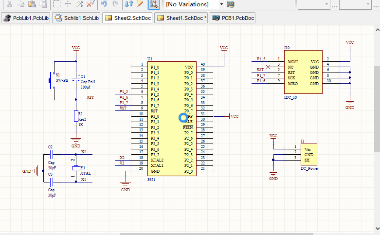
- 在工程中，新建PCB文件，并保存。
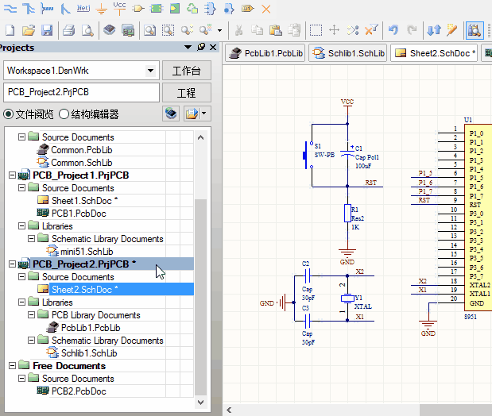
- 然后更新PCB文件。
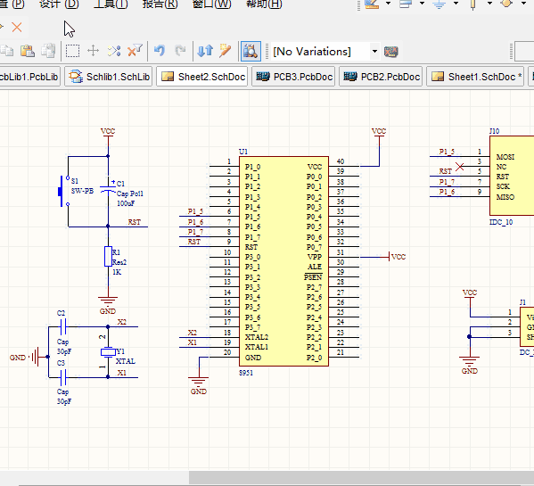
- 修改元件封装；并在PCB文件中，修改元器件布局。让后续的布线更合理简便。
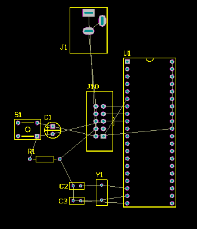
- 设计板子形状
- 在Keep-Out Layer层，绘制一个闭合的区域边框。
区域大小应尽量控制在100mm*100mm以内。
- 按住Shift键，选中该区域边框，在菜单"设计--板子形状--按照选择对象定义"。
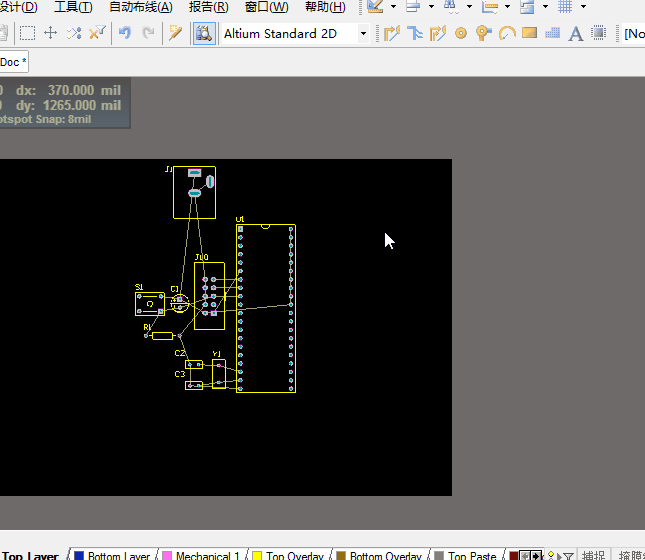
- 布线可以使用手工布线或自动布线。
- 在PCB四个角处，放置定位孔，定位孔直径推荐3.2mm。可以选用焊盘或Keep-Out Layer层剪切2种方式。
- 焊盘方式
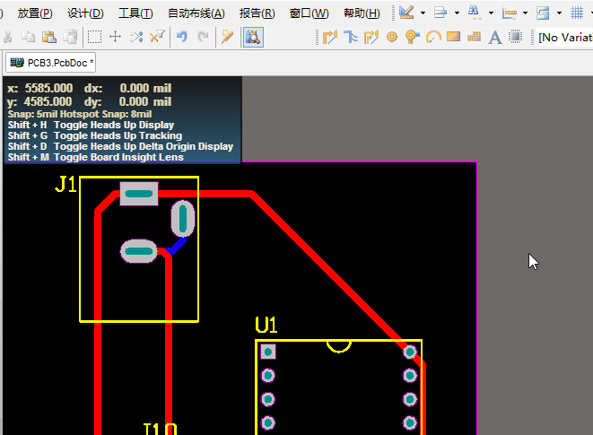
- Keep-Out Layer层剪切方式
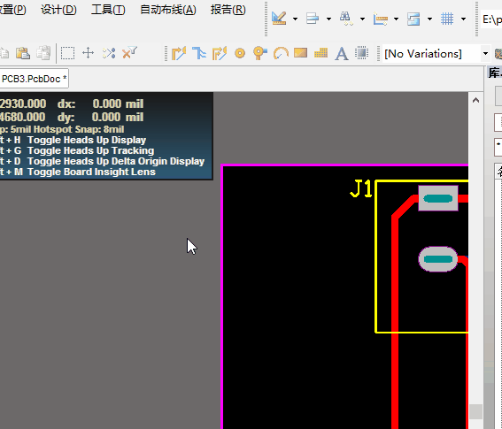
-
泪滴：泪滴是焊盘与导线或者是导线与导孔之间的滴装连接过度。可使走线与元件焊盘之间的连接平稳过渡，解决了焊盘与走线之间的连接容易断裂的问题。
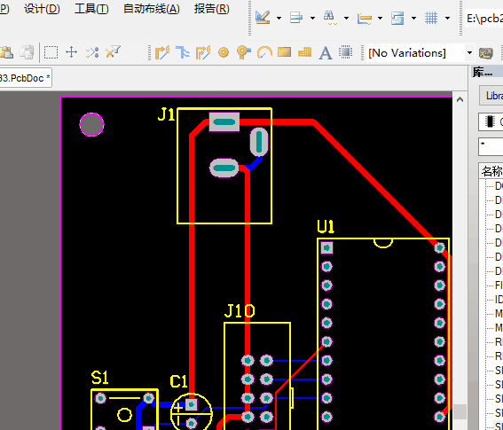
- 当前的pcb状态，参考如图。
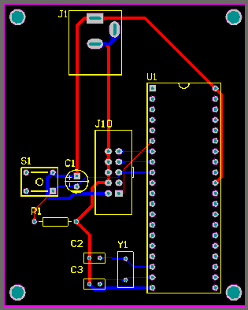
- 铺铜：敷铜的意义在于，减小地线阻抗，提高抗干扰能力。
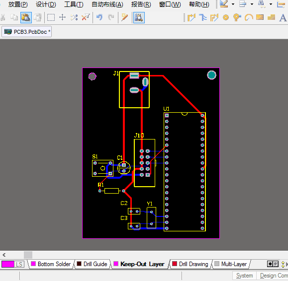
- 丝印层：增加组号、项目名称、版本号等。
注意：若为中文字符，需要设置字体为：TrueType，字体名为：宋体。
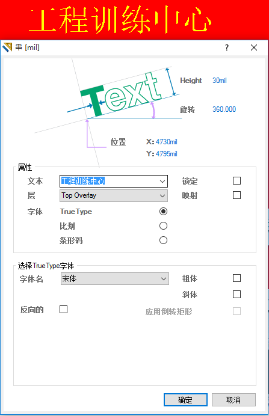
- 绘制完成的PCB图，参考如图。
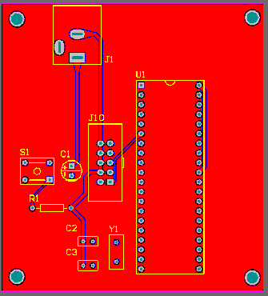